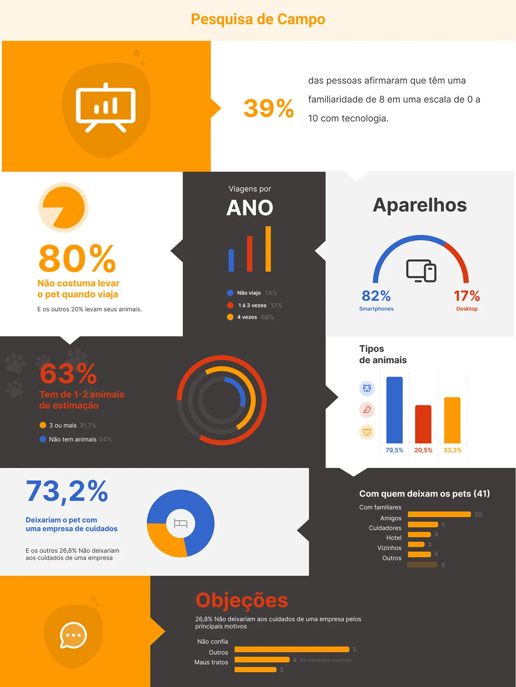
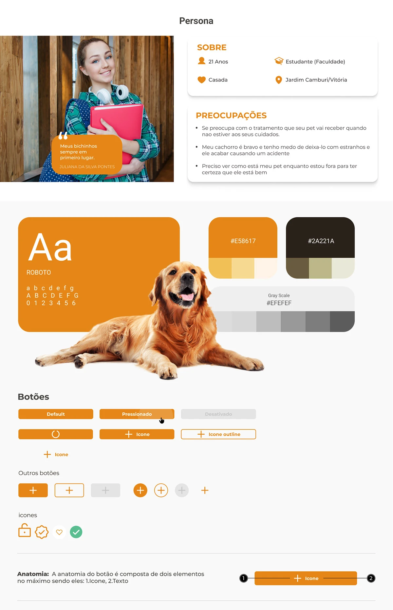
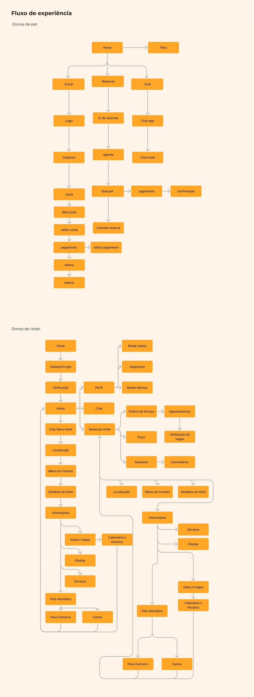
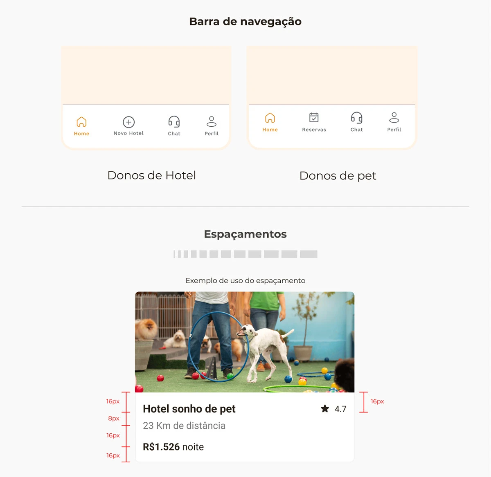
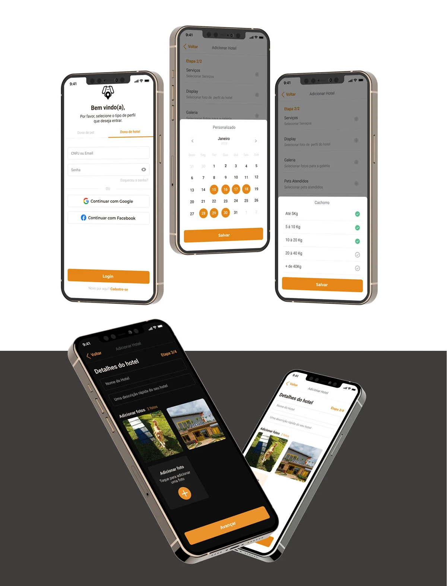

Resumo em 30 segundos
- O problema
- Hotéis para pet existem, mas pouca gente sabe onde encontrar, e muitos donos não confiam em deixar o animal com estranhos.
- O que descobri
- O app não disputa com outros hotéis. Disputa com a família, que é com quem as pessoas já deixam o pet hoje.
- O que fizemos
- Questionário com 41 donos de pet, persona, fluxos para quem reserva e para quem hospeda, guia de estilo e telas.
Contexto
O pedido do professor
Muita gente adotou um animal durante a pandemia. Com a volta dos compromissos fora de casa, apareceu um problema: onde deixar o pet numa viagem? Hotéis para pet existem, mas ainda são pouco conhecidos.
O tema da disciplina era um app ou site que reunisse esses hotéis e facilitasse a reserva. Antes de desenhar qualquer tela, o grupo quis saber se o problema era mesmo encontrar o hotel.
O caminho da pesquisa, em 4 passos
- O que a gente achava"O difícil é encontrar um hotel para pet."
- QuestionárioA maioria deixaria o pet com uma empresa, mas quem não deixaria fala de medo de maus-tratos.
- Com quem deixam hojeA resposta mais comum foi a família, bem à frente dos hotéis.
- A descobertaO problema não é achar o hotel. É confiar nele como se confia na família.
Etapa 1
Perguntamos a 41 donos de pet
Fizemos um questionário online e recebemos 41 respostas. Perguntamos como as pessoas viajam, com quem deixam o animal e se deixariam com uma empresa.
- 80%não costumam levar o pet quando viajam. A necessidade de deixar com alguém existe
- 73%deixariam o pet com uma empresa de cuidados. Os outros 27% não deixariam
- 82%marcaram o celular entre os aparelhos que usam, contra 17% que marcaram computador
Duas respostas mudaram o rumo do projeto:
- Medo. Quem não deixaria o pet com uma empresa falou de desconfiança e de medo de maus-tratos.
- A família. Para "com quem você deixa o pet hoje", a resposta mais comum foi a família, bem à frente dos hotéis.
A descoberta
O app não disputa com outros hotéis. Disputa com a mãe, o irmão ou o vizinho, e precisa passar a mesma segurança.
O dado do celular também confirmou a escolha por um app, em vez de um site.

Etapa 2
Para quem o app foi feito
Montamos uma persona a partir das respostas: uma estudante de 21 anos, casada, que mora em Jardim Camburi, em Vitória. As preocupações dela são as mesmas que apareceram no questionário:
- como o pet vai ser tratado quando ela não estiver por perto;
- o cachorro é bravo com estranhos, e ela tem medo de que aconteça um acidente;
- ela quer ver como o pet está durante a viagem, para ter certeza de que está tudo bem.

Etapa 3
Dois apps em um
Um app de reserva tem dois lados: quem reserva e quem recebe. Desenhamos o caminho dos dois:
Dono do pet
- Busca e escolhe o hotel.
- Reserva e paga.
- Conversa com o hotel durante a estadia.
Dono do hotel
- Cadastra o hotel.
- Acompanha as reservas.
- Responde aos donos pelo chat.
O chat fica na barra principal para os dois. É a resposta mais direta à preocupação da persona: poder perguntar como o pet está a qualquer momento.


Interface
As telas
A lista de hotéis mostra foto, distância, nota e preço da diária. "Minhas reservas" reúne as estadias, e o login aceita conta Google ou Facebook, para não exigir mais uma senha.

Olhando hoje
O que eu faria diferente
Sendo honesta: a pesquisa apontou a confiança como o maior obstáculo, mas as telas ainda tratam o hotel como um produto comum. Hoje eu mudaria quatro coisas:
- Mostrar sinais de confiança no cartão do hotelNão só nota, distância e preço. Também: se o hotel manda fotos durante a estadia, se tem veterinário, se aceita cães bravos e o que outros donos disseram.
- Começar por um lado sóO caminho do dono do hotel é bem maior. Numa primeira versão, eu focaria no dono do pet e cadastraria os hotéis à mão, para ver se as pessoas reservam antes de construir tudo.
- Testar as telas com pessoasA pesquisa veio antes das telas, mas as telas não foram testadas com ninguém. Eu pediria a cinco donos de pet para escolher um hotel no protótipo e dizer em voz alta por que confiariam ou não nele.
- Usar a família como referênciaA pergunta que guiaria o redesenho: o que faz alguém confiar na irmã para cuidar do cachorro? Conhecer a pessoa, ver o lugar e receber notícias.
Aprendizados
O que aprendi
Foi o primeiro projeto em que vi a pesquisa mudar a pergunta. Comecei querendo resolver "onde encontrar um hotel" e terminei entendendo que o trabalho era resolver "em quem confiar".
Também foi a primeira vez que desenhei, junto com o grupo, para dois públicos ao mesmo tempo. Aprendi que cada lado precisa do seu próprio menu, mesmo dentro do mesmo app.